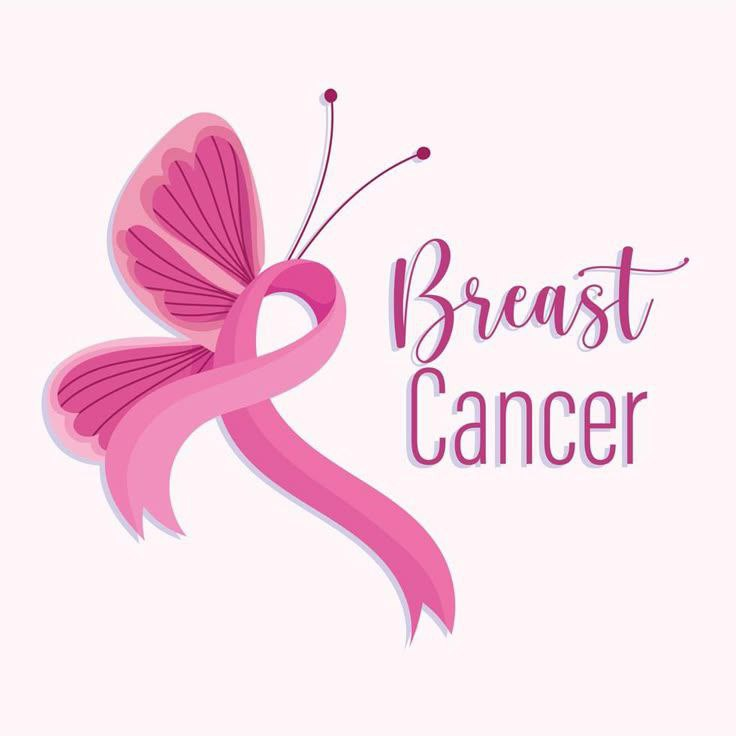
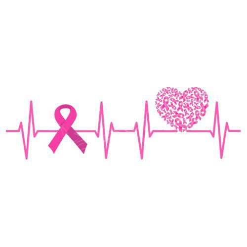

🎗
☰
حول سرطان الثدي
نصائح ودعم
الكشف المبكر
تواصل معنا
En
🌙
حين تتحول التوعية إلى حياة،
والأمل إلى لون لا يبهت أبدًا.
حول سرطان الثدي
⚠️ الأسباب وعوامل الخطورة
🔍 الأعراض والعلامات التي يجب الانتباه لها

نصائح ودعم
🌸 نصائح مفيدة أثناء فترة العلاج:

الكشف المبكر
🖐 خطوات الفحص الذاتي للثدي
تواصلي معنا